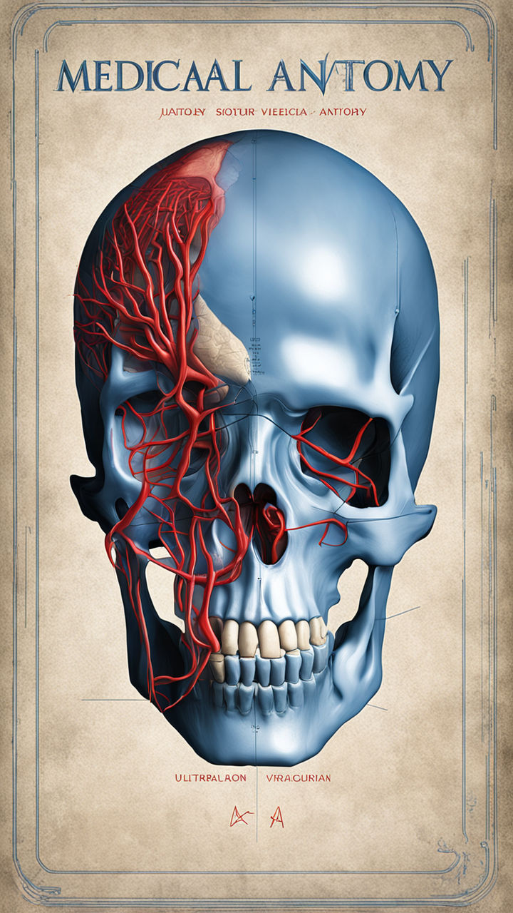
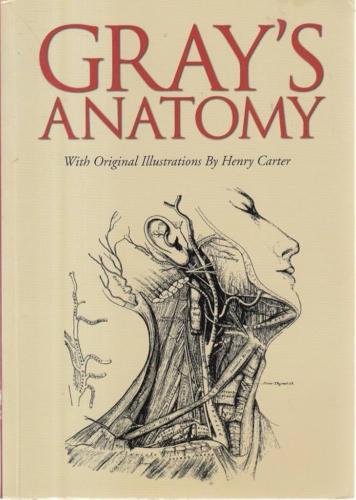
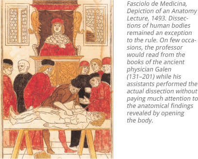
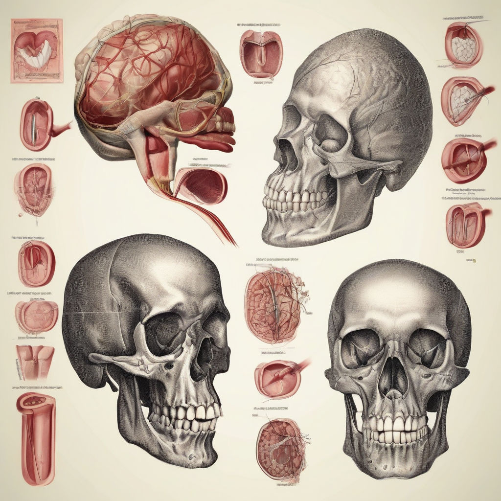
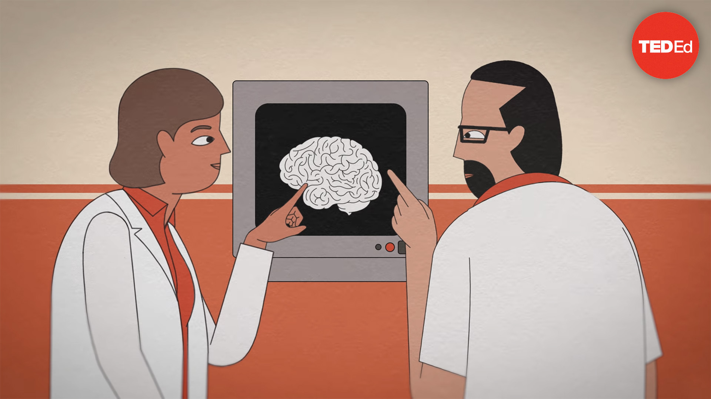
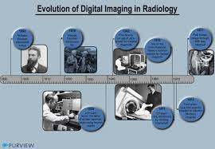
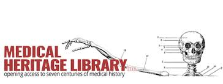

Resource List
Articles/E-books
|

Understanding the Human Anatomy Explore the evolution of anatomical knowledge from ancient to modern times. This article highlights significant discoveries and key figures who shaped the field of anatomy. |

Muscle Structures and Functions An in-depth analysis of various muscles in the human body, their structural composition, and their essential roles in facilitating movement and stability. |
A comprehensive e-book covering an extensive range of anatomical topics, including human systems, functions, and medical illustrations. |

Anatomy of the Human Body by Henry Gray (Public Domain Version) A free, downloadable version of "Gray's Anatomy," a classic resource in the field of anatomy, providing detailed illustrations and descriptions of the human body. |
Diagrams/Infographics
|

Anatomy for Beginners: The Historical Journey An infographic that illustrates the timeline of major anatomical discoveries, from ancient Egyptian mummification practices to contemporary medical imaging techniques. |

Comparative Anatomy Through the Ages A comparative analysis of anatomy across various species, including diagrams contrasting ancient and modern anatomical illustrations. |

Coursera: Human Anatomy Courses Online courses offering a deep dive into human anatomy, including video lectures, interactive quizzes, and real-world medical case studies. |
A study guide covering fundamental anatomy topics, such as cell structure, tissues, organs, and major systems. Ideal for students preparing for exams. |
Videos
|
YouTube: History of Anatomy Playlist A curated playlist of videos that explore the history of anatomical discoveries, dissection practices, and modern advancements. |

TED Talks: Modern Medical Imaging Techniques A series of TED Talks focusing on innovations in medical imaging and their impact on understanding human anatomy. |

Visual Anatomy: Evolution of Medical Imaging A detailed infographic showing the development of medical imaging technologies like X-rays, CT scans, and MRIs. |

A digital archive featuring an extensive collection of historical medical literature, including rare anatomical texts, illustrations, and manuscripts. |